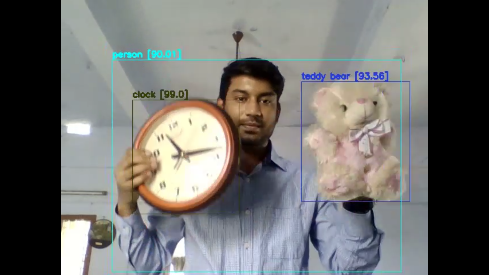
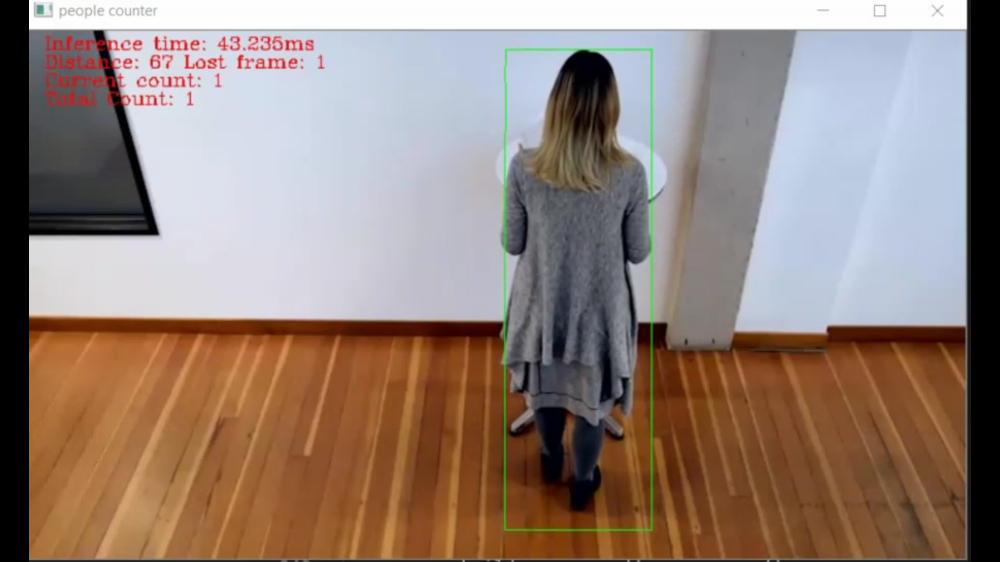
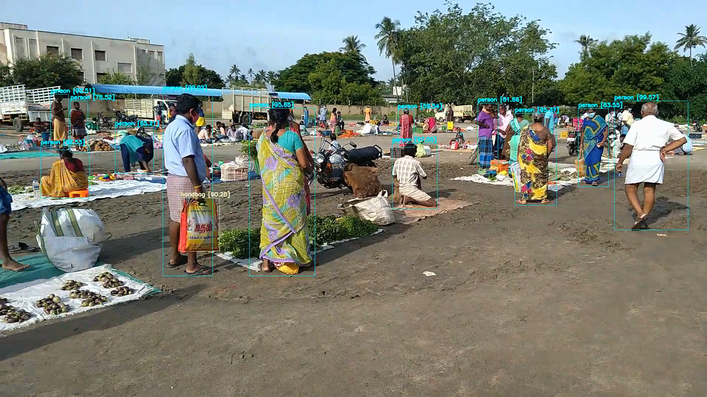
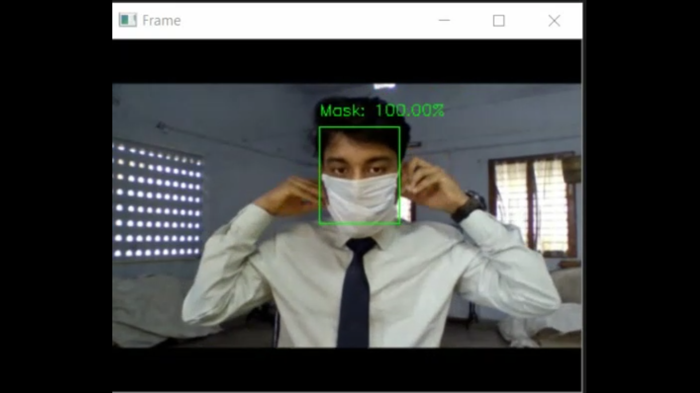
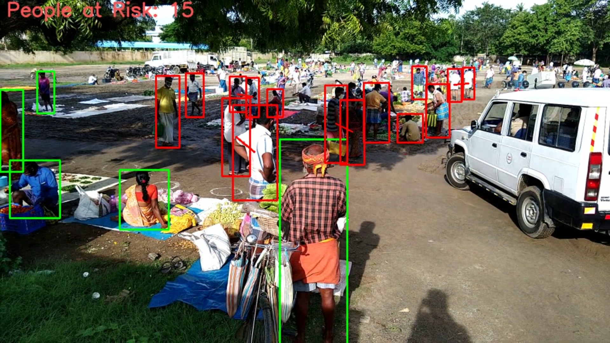
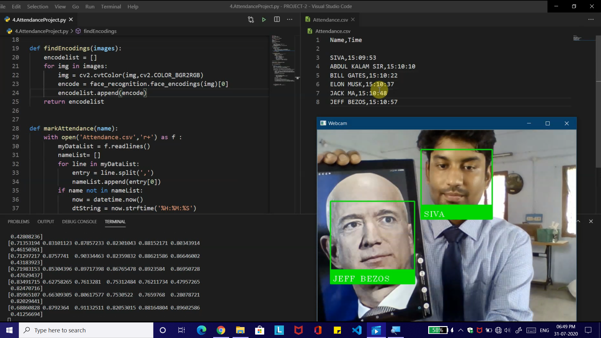
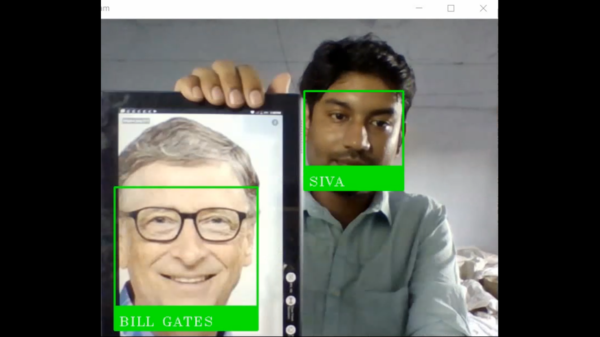

-
 Real Time Multi object detection -
 Artificial Intelligence People Counting Project -
 Object Identification -
 Face Mask Detection -
 Social Distance Monitor Project -
 People Recognition and Attendance Registration -
 Face Recognition -
 Car Count
Car Count -
 Image Project
Image Project
-
Realtime multi object detection Project
-
AI - IoT - People Count Project
-
Multi Object Detection
-
Face Mask Detection
-
Social Distance Monitor Project
-
People Recognition & Attendance registration
-
RealTime Face Recognition Project
-
car count - AI-iot project
-
Image Project